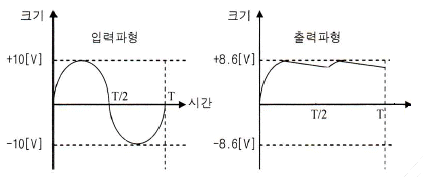
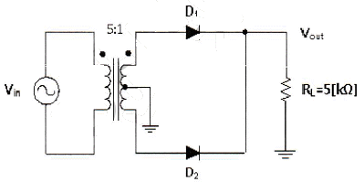
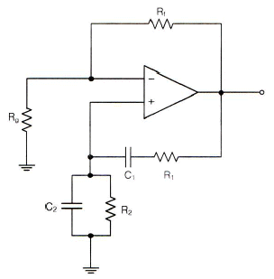
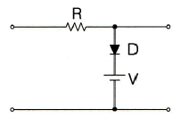
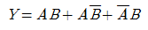
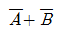
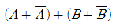
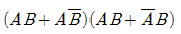
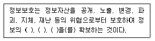

정보통신기사(구) (2012-03-11 기출문제)
1과목: 디지털 전자회로
1. 다음 그림은 정류회로의 입력파형과 출력파형을 나타내었다. 주어진 입출력 특성을 만족시키는 정류회로는? (단, 다이오드의 문턱전압은 0.7[V]이고, 변압기의 권선비는 1:1이라 가정한다.)

- 반파정류회로
- 중간탭 전파정류회로
- 2배압 정류회로
- 용량성 필터를 갖는 브리지 전파정류회로
(정답률: 85%)

2. 다음 그림에서 1차측과 2차측의 권선비가 5:1일 때, 1차측의 입력전압 Vrms=120[V]이다. 2개의 다이오드가 이상적이라고 가정할 때 직류 부하 전류의 평균치는 약 얼마인가?

- 1.74[mA]
- 2.16[mA]
- 5.11[mA]
- 6.82[mA]
(정답률: 58%)
3. 무부하일 때 직류 출력전압이 120[V]인 전원회로의 전압 변동률이 20[%]일 때 이 전원회로의 부하시 직류 출력전압은 얼마인가?
- 100[V]
- 10[V]
- 110[V]
- 11[V]
(정답률: 73%)
4. 다음 캐스코드 증폭기에 대한 설명으로 틀린 것은?
- 입력단은 공통베이스, 출력단은 공통이미터로 구성된 증폭기이다.
- 전압 궤환율이 매우 적다.
- 공통베이스 증폭기로 인해 고주파 특성이 양호하다.
- 자기 발진 가능성이 매우 적다.
(정답률: 52%)
5. 전력증폭기의 직류공급 전압은 12[V], 전류는 400[mA]이고 효율이 60[%]일 때 부하에서의 출력전력은?
- 0.7[W]
- 1.44[W]
- 2.88[W]
- 4.8[W]
(정답률: 64%)
6. 선형 증폭기 동작을 위한 바이어스 조건은?
- A급 동작
- B급 동작
- C급 동작
- D급 동작
(정답률: 81%)
7. 이상적인 OP-AMP의 특성으로 틀린 것은?
- 입력임피던스(Zi)가 무한대이다.
- 출력임피던스(ZO)가 무한대이다.
- 전압이득(AV)이 무한대이다.
- CMRR(동상제거비)는 무한대이다.
(정답률: 77%)
8. 그림은 윈-브릿지(Wein-bridge) 발진회로이다. R1, R2 값이 감소할 경우 발진주파수의 변화는?

- 증가한다
- 감소한다
- 변화없다
- 발진이 되지 않는다
(정답률: 84%)
9. 발진을 위한 조건으로 적합한 것은?
- 클리퍼 회로가 필요하다.
- 증폭기에 부궤환 회로를 부가한다.
- 공진 결합 회로가 필요하다.
- 증폭기에 정궤환 회로를 부가한다.
(정답률: 74%)
10. 주파수변조를 진폭변조와 비교할 경우 잘못된 것은?
- 점유주파수대폭이 넓다.
- 초단파대의 통신에 적합하다.
- S/N비가 좋아진다.
- Echo의 영향이 많아진다.
(정답률: 76%)
11. 정보 전송의 변복조 기술에서 반복 주기가 일정한 펄스의 시간폭을 신호파의 진폭에 대응하여 변화시키는 방식은?
- PCM
- PPM
- PWM
- PAM
(정답률: 54%)
12. 멀티바이브레이터의 단안정, 무안정, 쌍안정의 동작은 어떻게 결정되는가?
- 전원 전압의 크기
- 바이어스 전압의 크기
- 전원 전류의 크기
- 결합회로의 구성
(정답률: 79%)
13. 그림과 같은 회로에 대한 설명 중 옳은 것은?

- 입력 파형의 아랫부분을 잘라내는 베이스 클리퍼 회로이다.
- 입력 파형의 윗부분을 잘라내는 피크 클리퍼 회로이다.
- 직렬형 베이스 클리퍼 회로이다.
- 입력 파형의 위, 아래 부분을 일정하게 잘라내는 클리퍼 회로이다.
(정답률: 78%)
14. 다음 논리 함수

를 간소화하면 옳은 것은?- A + B



(정답률: 78%)
15. 2-out of-5 code에 해당하지 않는 것은?
- 10010
- 11000
- 10001
- 11001
(정답률: 84%)
16. 다음 중 두 게이트 입력이 0과 1일 때, 1의 출력이 나오지 않는 것은?
- NOR 게이트
- OR 게이트
- NAND 게이트
- Exclusive OR 게이트
(정답률: 72%)
17. 30:1의 리플계수기를 설계할 때 최소로 필요한 플립플롭의 수는?
- 4
- 5
- 6
- 8
(정답률: 81%)
18. 반감산기의 동작을 옳게 나타낸 것은?
- 1자리의 2진수의 감산을 하는 동작을 한다.
- 2자리의 2진수의 감산을 하는 동작을 한다.
- 3자리의 2진수의 감산을 하는 동작을 한다.
- 1자리의 carry를 덧셈과 같이 감산하는 동작을 한다.
(정답률: 70%)
19. 비동기 카운터와 관계없는 것은?
- 리플 카운터라고도 한다.
- 설계가 쉽다.
- 전단의 출력이 다음 단의 트리거 입력이 된다.
- 속도가 빠르다.
(정답률: 71%)
20. 다음의 디지털 장치에서 디코더(decoder)의 반대 동작을 하는 장치는?
- 멀티플렉서(multiplexer)
- 전가산기(full adder)
- 디멀티플렉서(demultiplexer)
- 인코더(encoder)
(정답률: 84%)
2과목: 정보통신 시스템
21. 교환국 수가 n일 때 성형 통신망의 중계 회선수는?
- n
- n-1
- n/2
- n(n-1)/2
(정답률: 60%)
22. 정보통신망의 기본적인 구성요소에 해당되지 않는 것은?
- 교환기
- 통신제어장치
- 전송로
- 단말기
(정답률: 63%)
23. 다음 중 방송통신망과 거리가 먼 것은?
- 위성통신망
- 패킷 라디오망
- 전화망
- CATV망
(정답률: 72%)
24. 세션(session) 서비스에서 세션 접속의 설정 및 해제에 필요한 절차의 기본 프로토콜 요소를 제공하는 것은?
- 핵(Kernel) 기능단위
- 절충 해제(Negotiated Release) 기능단위
- 반 이중(Half-Duplex) 기능단위
- 전 이중(Full-Duplex) 기능단위
(정답률: 72%)
25. 프로토콜의 주요 요소 중에서 데이터의 구조나 형식 등을 규정하는 것은?
- 타이밍
- 구문
- 의미
- 표준
(정답률: 82%)
26. 디지털 종합 정보통신망(ISDN)에서 데이터 링크 제어용으로 대역외 신호방식(Out-of-band Signaling)을 사용하는 HDLC 응용 프로토콜은?
- LAPB(Link Access Procedure Balanced)
- LAPD(Link Access Procedure for D channel)
- LAPM(Link Access Procedure for Modems)
- SLIP(Serial Line IP)
(정답률: 65%)
27. 프로토콜에 관한 설명 중 틀린 것은?
- 컴퓨터를 이용한 온라인(on-line) 시스템 등장 이후 필요성이 제기되었다.
- 프로토콜의 기본구성은 구문(syntax), 패스(path), 의미(semantics)로 분류된다.
- 통신 프로토콜의 표준화가 제기되면서 국제전기통신연합(ITU)에서 공중패킷교환망용 X.25을 표준화하였다.
- 기능별 계층(layer)화 프로토콜 기술을 채택하는 네트워크 아키텍처로 발전하게 되었다.
(정답률: 86%)
28. OSI 7계층에서 가장 하위 레벨인 계층은?
- 전송 계층
- 표현 계층
- 데이터링크 계층
- 물리 계층
(정답률: 87%)
29. 국내 공중통신망의 총괄국 아래 계위의 디지털 교환기들이 사용하고 있는 망동기 방식은?
- 단순 종속동기방식(SMS : Simple Master Slave)
- 계위 종속동기방식(HMS : Hierarchical Master Slave)
- 선지정 대체 종속동기방식(PAMS : Pre Assigned Master Slave)
- 자체 재배열 종속동기방식(SOMS : Self Organized Master Slave)
(정답률: 62%)
30. 인터넷 통신망에서 가입자가 요구하는 서비스품질을 만족시키기 위하여 가입자의 입력 트래픽을 특성에 의해 몇 개의 클래스로 그룹화하여 클래스 기반으로 서비스하는 방식은 무엇인가?
- Diffserv 방식
- Intserv 방식
- Flow-based 방식
- RSVP 방식
(정답률: 81%)
31. ATM 기술의 특징과 가장 거리가 먼 것은?
- 오류 확인 재전송 절차 필요
- 셀의 우선순위 부여 가능
- 정보가 발생했을 때만 셀 전송
- 가상경로에 의한 접속과 대역 관리
(정답률: 49%)
32. CSMA/CD 방식에 관한 특징 중 옳지 않은 것은?
- 데이터 전송이 피용할 때 임의로 채널을 할당하는 랜덤할당방식이다.
- 버스 구조에 이용될 수 있다.
- 노드수가 많고, 데이터 전송량이 많을수록 안정적이고 효율적으로 전송이 가능하다.
- 채널로 전송된 패킷은 모든 노드에서 수신이 가능하다.
(정답률: 82%)
33. 인터넷상에서 주소체계인 IPv4와 IPv6을 비교한 설명으로 옳지 않은 것은?
- IPv4는 32비트의 주소체계를 가지고 있다.
- IPv4는 헤도구조가 복잡하다.
- IPv4는 네트워크 크기나 호스트의 수에 따라 A, B, C, D, E 클래스로 나누어진다.
- IPv4는 확실한 Qos(Quality of Service)가 보장된다.
(정답률: 67%)
34. 다음 중 전화 교환기의 제어방식에 따른 분류가 아닌 것은?
- 단독제어방식
- 공통제어방식
- 축적프로그램제어방식
- 분산제어방식
(정답률: 55%)
35. 데이터링크 계층에서 동작하는 인터네트워킹 장비는?
- 라우터
- 브리지
- 허브
- 리피터
(정답률: 76%)
36. 모든 사물에 전자태그(RFID)를 부착하고 주변에 설치되어 있는 세서 판독기를 통해 관련 정보를 인식하고 관리하는 네트워크 개념은?
- USN
- BCN
- LAN
- VAN
(정답률: 82%)
37. 정보통신망에서 채널용량은 샤논의 정리와 나이퀴스트의 전송률에 의해 정리할 수 있는데, 샤논과 나이퀴스트 정리에서 채널용량과 전송률을 높이기 위한 공통점은 무엇인가?
- 대역폭
- 주파수
- 데이터의 비트수
- 신호대잡음비
(정답률: 80%)
38. 다음 중 괄호 안에 들어갈 내용으로 알맞지 않은 것은?

- 기밀성
- 무결성
- 가용성
- 완성도
(정답률: 76%)
39. 인터넷 프로토콜 중 IPv4는 주소부족, 보안성 취약, 실시간 전송시의 문제점 등이 있어 IPv4의 주소 체계를 획기적으로 개선한 차세대 인터넷 프로토콜은?
- IPv5
- IPv6
- Subnetting
- NAT
(정답률: 88%)
40. 중앙 집중 운용 보전망(Telecommunication management network) 기능이 아닌 것은?
- 유지 보수 효율성을 개선한다.
- 좀더 효율적으로 고도로 전문화된 기계 자원들을 활용한다.
- 좀더 효율적인 데이터베이스를 활용한다.
- 통신망의 기술 성능에 대한 원칙을 고수한다.
(정답률: 71%)
3과목: 정보통신 기기
41. 다음 중 통신제어 장치의 설명으로 올바른 것은?
- 중앙처리장치의 부하를 가중시킨다.
- 통신회선의 감시 및 접속, 전송오류검출을 수행한다.
- 회선접속장치를 원격처리장치로 연결한다.
- 중앙처리장치의 제어를 받지 않는다.
(정답률: 78%)
42. 단말기에 마이크로프로세서를 내장하여 분산처리방식에 적절한 단말장치는?
- 전용단말장치
- 지능형단말장치
- 복합단말장치
- 범용단말장치
(정답률: 77%)
43. 다음 중 정보 단말기의 전송제어 기능이 아닌 것은?
- 입ㆍ출력 제어기능
- 송ㆍ수신 제어기능
- 모뎀 제어기능
- 에러 제어기능
(정답률: 61%)
44. 모뎀과 단말기 사이에 단말기에서 모뎀으로 데이터를 보내기 위한 신호는?
- RTS(Request To Send)
- CTS(Clear To Send)
- DCE(Data Circuit Equipment)
- DSR(Data Set Request)
(정답률: 80%)
45. 다음 중 시분할 다중화기에 대한 설명과 가장 거리가 먼 것은?
- 비트 삽입식과 문자 삽입식의 두 가지가 있다.
- 시분할 다중화기가 주로 이용되는 곳은 Point-to-Point 시스템이다.
- 각 부채널은 고속의 채널을 실제로 분배된 시간을 이용한다.
- 보통 1,200[baud]이하의 비동기식에서 사용한다.
(정답률: 69%)
46. 다음 중 멀티 포트 모뎀을 가장 바르게 설명한 것은?
- 짧은 거리에서 경비를 절감하기 위해 사용한다.
- 시분할 다중화기와 고속 동기식 모뎀을 이용한다.
- 약간의 전산처리능력을 부가하고 데이터 압축기능이 부가된 것이다.
- 비교적 원거리 통신용으로 개발된 모뎀이다.
(정답률: 71%)
47. 송수신할 데이터가 있는 단말기에만 타임슬롯(time slot)을 할당하는 방식을 무엇이라 하는가?
- 다중화 방식
- 부호화 방식
- 변조 방식
- 집중화 방식
(정답률: 62%)
48. 다음 중 CATV의 헤드엔드(Head End)의 주요 기능이 아닌 것은?
- 채널 변환 기능
- 신호 분리 및 혼합 기능
- 옥내 분배 기능
- 신호 송출 기능
(정답률: 78%)
49. G4 팩시밀리에 대한 설명으로 옳지 않은 것은?
- 통신 기능에 따라 1등급, 2등급, 3등급으로 구분할 수 있다.
- 전송속도는 48[kbps]이다.
- Digital 신호 방식으로 ISDN을 사용한다.
- MH(Modified Huffman), MR(Modified Read) 부호화 방식에 의해 Data를 압축, 전송한다.
(정답률: 76%)
50. 일반적으로 FAX에서 가장 많이 사용하는 동기방식은?
- 독립동기방식
- 종속동기방식
- 전원동기방식
- 전송동기방식
(정답률: 57%)
51. 자유공간에서 송수신 안테나간 거리 2[km]에 10[GHz]의 주파수로 통신링크를 구성하고자 한다. 이에 대한 전송경로 손실은 대략 얼마인가?
- 106.52[dB]
- 112.52[dB]
- 118.52[dB]
- 124.52[dB]
(정답률: 75%)
52. 다음 중 전자파의 복사계가 아닌 것은?
- 정전계
- 유도전자계
- 복사전자계
- 등방성전자계
(정답률: 66%)
53. 지구국으로부터 통신위성까지의 거리가 36,000[km]일 때, 이 지구국에서 발사된 전파가 통신위성을 경유하여 지구국에 도착할 때까지 걸리는 이론적 시간은 얼마인가? (단, 지구국과 통신위성 장치에서 소요되는 시간은 고려하지 않는다.)
- 240[ms]
- 245[ms]
- 250[ms]
- 255[ms]
(정답률: 78%)
54. 다음 중 부호분할다원접속(CDMA) 방식에 대한 설명으로 옳지 않은 것은?
- 위성통신에서만 사용되고 있는 다원접속방식이다.
- 의사불규칙 잡음코드를 사용한다.
- 주파수도약방식을 사용하므로 페이딩에 강하다.
- 사용 스펙트럼의 확산으로 인접 주파수대역에 대한 간섭을 줄일 수 있다.
(정답률: 70%)
55. 다음 중 전자파의 성질이 아닌 것은?
- 반사
- 굴절
- 도약
- 회절
(정답률: 74%)
56. 다음 중 위성통신에 적용되는 다원접속(multiple access) 방식이 아닌 것은?
- 교환분할다원접속방식
- 주파수분할다원접속방식
- 시간분할다원접속방식
- 부호분할다원접속방식
(정답률: 67%)
57. 인터넷 텔레포니의 핵심 기술로서 지금까지 PSTN을 통해 이루어졌던 음성 전송을 인터넷 망을 사용하여 제공하는 것은?
- VoIP
- DMB
- WiBro
- VOD
(정답률: 84%)
58. 다음 중 메시지 처리시스템(MHS)의 구성 요소가 아닌 것은?
- MS(Message Store)
- UA(User Agent)
- AU(Access Unit)
- MH(Message Host)
(정답률: 79%)
59. 다음 중 정지 및 이동환경에서 고속으로 인터넷에 접속하여 멀티미디어 콘텐츠를 이용할 수 있는 것은?
- DMB
- WiBro
- RFID
- GPS
(정답률: 79%)
60. 다음 중 문자나 그림으로 구성된 화상 정보가 축적되어 있는 데이터베이스로부터 TV 수상기와 전화회선을 이용하여 사용자가 원하는 각종 정보검색 시스템을 제공하는 것은?
- 쌍방향 CATV
- VRS(Video Response System)
- 팩시밀리
- 비디오텍스
(정답률: 77%)
4과목: 정보전송 공학
61. 다음의 설명 중 가장 틀린 것은?
- ADM은 양자화기의 스텝 크기를 입력신호에 따라 적응시키는 방법
- PCM은 연속적인 아날로그 신호의 진폭을 일정한 간격으로 변환하는 방법
- DM은 예측값과 측정값의 차이를 양자화하는 변조 방법
- DPCM은 진폭값과 예측값과의 차이만을 양자화하는 방법
(정답률: 63%)
62. 변조도가 60[%], 반송파 전력이 1.6[kW]인 AM에서 상측파대 전력은 몇 [W]인가?
- 108[W]
- 124[W]
- 138[W]
- 144[W]
(정답률: 62%)
63. 양자화 잡음은 다음 중 어느 방식에서 주로 발생하는가?
- PDM
- PPM
- PCM
- PWM
(정답률: 71%)
64. 표본화 정리에 의하면 주파수 대역이 60[Hz]~3.6[kHz]인 신호를 완전히 복원하기 위한 표본화 주기는?
- 1/60초
- 1/3.6초
- 1/7,200초
- 1/6,800초
(정답률: 79%)
65. 다음 중 양자화 스텝수가 6비트이면 양자화 계단수(M)는 얼마인가?
- 16
- 64
- 32
- 8
(정답률: 82%)
66. 다음 중 다중화 장치에 대한 설명으로 가장 옳지 않은 것은?
- 여러 개의 신호를 동시에 하나의 채널로 전송하는 장치이다.
- 정적인 공동 이용장치이다.
- 데이터를 병렬로 전송하는 장치를 말한다.
- 하나의 물리적 회선을 통하여 전송하는 시스템이다.
(정답률: 60%)
67. 설계자가 감쇠 특성을 고려하여 통신시스템을 설계할 때 유의하지 않아도 되는 사항은?
- 수신기의 전자회로가 신호를 검출하여 해석할 수 있을 정도로 수신된 신호는 충분히 커야 한다.
- 오류가 발생하지 않을 정도로 신호는 잡음보다 충분히 커야 한다.
- Pair 케이블을 조밀하게 감을수록 비용이 낮고 성능을 좋아진다.
- 감쇠는 주파수가 증가함에 따라 증가하는 특성을 보인다.
(정답률: 74%)
68. 다음 중 동축케이블의 장점이 아닌 것은?
- 용량이 커서 많은 신호를 한번에 전송한다.
- 케이블 간의 신호 간섭을 억제한다.
- 주파수 신호세력의 감쇠나 전송지연의 변화가 적다.
- 장거리 및 대규모 회선에 적합하다.
(정답률: 73%)
69. 동축케이블이나 광섬유 전송매체와 비교했을 때 일반적인 트위스티드 페어(Twisted Pair) 케이블에 대한 설명으로 잘못된 것은?
- 신호의 감쇄 및 간섭에 약하다.
- 아날로그 및 디지털 전송에 모두 사용할 수 있다.
- 비용이 저렴한 편이다.
- 대역폭이 넓다.
(정답률: 71%)
70. 최대 전송률을 예상할 수 있는 나이퀴스트 공식으로 맞는 것은? (단, C는 채널용량, B는 전송채널의 대역폭, M은 진수, S/N은 신호대잡음비)
- C = B*log2(M)
- C = 2*B*log2(M)
- C = B*log2(M*1+S/N)
- C = 2*B*log2(M*(1+S/N))
(정답률: 73%)
71. 비동기 전송 방식의 특징으로 가장 옳은 것은?
- 문자와 문자 사이에 일정치 않은 휴지 시간이 존재할 수 있다.
- 시작 비트와 정지 비트 없이 출발과 도착 시간이 정확한 방식이다.
- 비트열이 하나의 블록 또는 프레임의 형태로 전송된다.
- 모뎀이 단말기에 타이밍 펄스를 제공하여 동기가 이루어진다.
(정답률: 66%)
72. 다음 전송방식 중 2선식 전송로를 사용하여 양방향 신호 전송이 가능하지만 동시에 양방향 전송이 불가능한 통신방식은?
- Simplex
- Half-Duplex
- Full-Duplex
- One-way
(정답률: 80%)
73. 문자방식 프로토콜에 사용되는 전송제어문자가 아닌 것은?
- ENQ
- DLE
- REG
- ETB
(정답률: 63%)
74. TEST라는 문자를 아스키(ASCII) 코드 형태로 변환하여 비동기 방식으로 전송할 때 스타트 비트, 스톱 비트를 각각 1비트로 할 경우 전송되는 총 비트수는?
- 6[bit]
- 28[bit]
- 32[bit]
- 40[bit]
(정답률: 75%)
75. BSC(Binary Synchronous Communication) 프로토콜의 특징이 아닌 것은?
- 사용 코드에 제한이 있다.
- 동일한 통신 회선상의 터미널은 동일한 코드를 사용한다.
- 전이중 전송 방식만 가능하다.
- 전파 지연 시간이 긴 선로에서는 비효율적이다.
(정답률: 78%)
76. 전송제어 프로토콜 중 HDLC 프로토콜의 프레임구조에서 어드레스(Address)부의 모든 비트가 1인 경우를 무엇이라 하는가?
- No Station Address
- Destination Address
- Source Address
- Global Address
(정답률: 69%)
77. 데이터링크 계층(Datalink Layer)에서 전송제어 프로토콜의 절차 단계 중 옳은 것은?
- 데이터링크 설정 → 회선접속 → 정보전송 → 회선절단 → 데이터링크 해제
- 정보전송 → 회선접속 → 데이터링크 설정 → 데이터링크 해제 → 회선절단
- 회선접속 → 데이터링크 설정 → 정보전송 → 데이터링크 해제 → 회선절단
- 회선접속 → 데이터링크 설정 → 데이터링크 해제 → 회선절단 → 정보전송
(정답률: 80%)
78. 다음 중 정보 비트를 모두 Exclusive_OR로 하여 계산하는 에러검출 방식은?
- 검출 후 재전송 방식
- 전진 에러 수정 방식
- 해밍 코드 방식
- CRC 방식
(정답률: 51%)
79. OSI 7계층 중 2계층인 데이터링크 계층(Data link Layer)의 기능이 아닌 것은?
- 입출력제어
- 회선제어
- 동기제어
- 세션제어
(정답률: 73%)
80. 통신속도가 2,000[bps]인 회선에서 1시간 전송했을 때, 에러 비트수가 36[bit]였다면, 이 통신회선의비트 에러율은 얼마인가?
- 2.5×10-6
- 2.5×10-5
- 5×10-6
- 5×10-5
(정답률: 75%)
5과목: 전자계산기일반 및 정보통신설비기준
81. 다중프로그래밍(multi-programming)을 위하여 시스템이 갖추어야 할 것 중 관계가 가장 적은 것은?
- 인터럽트(interrupt)
- 가상메모리(virtual memory)
- 시분할(time slicing)
- 스풀링(spooling)
(정답률: 54%)
82. 자외선을 이용하여 지울 수 있는 메모리는 어느 것인가?
- PROM
- EPROM
- EEPROM
- 플래쉬 메모리(Flash Memory)
(정답률: 81%)
83. I/O 채널(channel)의 설명 중 맞지 않는 것은?
- CPU는 일련의 I/O 동작을 지시하고 그 동작 전체가 완료된 시점에서만 인터럽트를 받는다.
- 입출력 동작을 위한 명령문 세트를 가진 프로세서를 포함하고 있다.
- 선택기 채널(selector channel)은 여러 개의 고속 장치들을 제어한다.
- 멀티플렉서 채널(multiplexer channel)에는 보통 하드디스크 장치들을 연결한다.
(정답률: 55%)
84. 마이크로컴퓨터의 기본 정보는 ‘0’과 ‘1’로만 표현되며, 이러한 부호의 조합을 명령(instruction)이라고 한다. 그리고 명령들은 어떤 목적과 규칙에 따라 나열되고, 메모리에 저장되는데 이것을 무엇이라고 하는가?
- 데이터(DATA)
- 소프트웨어(software)
- 신호(Signal)
- 2진 코드
(정답률: 69%)
85. 0-주소 명령어(zero-addressing instruction)에서 사용하는 특정한 기억장치 조직은 무엇인가?
- 그래프(graph)
- 스택(stack)
- 큐(queue)
- 트리(tree)
(정답률: 76%)
86. 다음 중 입력 장치들에 사용되는 매체가 아닌 것은?
- 천공 카드(punch card)
- 사운드 카드(sound card)
- OMR 카드
- 바 코드(bar code)
(정답률: 65%)
87. 다음 중 순차파일(sequential file)의 특징이 아닌 것은?
- 새로운 레코드를 삽입하는데 효율적이다.
- 레코드 탐색시 선형탐색을 해야 한다.
- 이전의 레코드를 탐색하려면 파일을 되돌리면 된다.
- 레코드를 삭제하려면 새로운 파일을 작성해야 한다.
(정답률: 57%)
88. 메모리관리에서 빈 공간을 관리하는 free 리스트를 끝까지 탐색하여 요구되는 크기보다 더 크며 그 차이가 제일 작은 노드를 찾아 할당해주는 방법은 어느 것인가?
- 최초적합(first-fit)
- 최적적합(best-fit)
- 최악적합(worst-fit)
- 최후적합(last-fit)
(정답률: 84%)
89. 디스크를 사용하려면 최초에 반드시 해야 할 사항은 무엇인가?
- 내용을 지우고 잠근다.
- 파티션을 만들고 포맷한다.
- 폴더와 파일들로 채운다.
- 시분할(time slice)한다.
(정답률: 83%)
90. 운영체제는 컴퓨터 시스템을 구성하는 요소 중의 하나로 시스템에 제공되는 기능(또는 목적)으로 올바르게 짝지어진 것은?
- 편의성-효율성
- 청각성-정확성
- 시각성-편의성
- 청각성-신속성
(정답률: 82%)
91. 다음 중 통신요금의 감면대상과 거리가 먼 것은?
- 재해를 입은 자의 통신을 위한 전기통신서비스
- 정보통신의 이용촉진과 보급확산을 위한 전기통신서비스
- 평상시 군 작전에 필요한 전기통신서비스
- 사회복지증진을 위하여 보호를 필요로 하는 전기통신서비스
(정답률: 68%)
92. 공사 도급의 정의를 가장 바르게 설명한 것은?
- 발주자가 의뢰한 공사의 설계도서를 작성하고 이에 따라 공사의 공정을 기획 작성하는 것
- 공사업자가 공사를 완공할 것과 발주자가 이의 대가를 지급할 것을 약정하고 계약하는 것
- 용역업자가 공사의 시방서를 작성하고 이에 따라 공사기자재를 준비하는 것
- 공사업자가 용역업자의 설계도서와 공사시방서에 따라 공사를 시공하는 것
(정답률: 77%)
93. 다음 전기통시업무의 제한 및 정지에 관한 설명 중 적합하지 않은 것은?
- 천재, 지변 등 국가비상사태시 중요통신을 확보하기 위하여 전기통신사업자의 전기통신업무를 제한, 정지할 수 있다.
- 전기통신업무의 제한, 정지시 정도에 따라 업무를 수행하기 위하여 통화의 순으로 소통하게 할 수 있다.
- 제한 또는 정지되는 전기통신업무는 중요통신을 확보하기 위하여 최소한의 것이어야 한다.
- 전기통신사업자는 전기통신 업무의 제한 또는 정지한 때에는 지체없이 그 내용을 대통령에게 보고하여야 한다.
(정답률: 75%)
94. 교환설비 등으로부터 수신된 방송통신콘텐츠를 변환ㆍ재생 또는 증폭하여 유선 또는 무선으로 송신하거나 수신하는 설비로서 전송단국장치ㆍ중계장치ㆍ다중화장치ㆍ분배장치 등과 그 부대설비를 총괄하여 무엇이라 하는가?
- 선로설비
- 전송설비
- 정보통신망
- 전기통신망
(정답률: 58%)
95. 정보통신망과 관련된 기술 및 기기의 개발을 효율적으로 추진하기 위하여 연구개발, 기술협력, 기술이전 또는 기술지도 등의 사업을 할 수 이Tr 하는 자는 누구인가?(관련 규정 개정전 문제로 기존 정답은 2번입니다. 여기서는 2번을 누르면 정답 처리됩니다. 자세한 내용은 해설을 참고하세요.)
- 방송통신위원장
- 지식경제부장관
- 행정안전부장관
- 교육관련기술부장관
(정답률: 72%)
96. 다음 중 감리원의 업무범위에 해당하지 않는 것은?
- 시공상세도면의 검토 및 확인
- 사용자재의 규격 및 적합성에 대한 확인
- 재해예방대책 수립 및 안전관리자의 지정
- 설계변경에 관한 사항의 검토 및 확인
(정답률: 65%)
97. 다른 인터넷 멀티미디어 방송 제공사업자가 사용 중인 자기보유 설비의 제공을 중단하거나 제한할 수 있는 정당한 사유가 아닌 것은?
- 손실 또는 장애는 없으나 기술적 방식의 차이가 있는 경우
- 해킹, 컴퓨터 바이러스 등으로 인한 기술적 장애가 있는 경우
- 사업의 휴지 또는 폐지
- 천재지변으로 정상적인 운영이 어려운 경우
(정답률: 79%)
98. 방송통신위윈회가 전기통신의 발전을 위하여 필요한 경우 전기통신사업자에게 명할 수 있는 사항으로 볼 수 없는 것은?
- 금지행위의 중지
- 전기통신사업의 양수 및 법인의 합병
- 전기통신역무에 관한 업무 처리절차의 개선
- 전기통신역무에 관한 정보의 공개
(정답률: 66%)
99. 방송통신설비가 이에 접속되는 다른 방송통신설비의 위해 등을 방지하기 위한 대책으로 적합하지 않은 것은?
- 전력선통신을 행하는 방송통신설비는 이상전압이나 이상전류에 대한 방지대책에 요구되지 않는다.
- 다른 방송통신설비를 손상시킬 우려가 있는전류가 송출되는 것이어서는 아니 된다.
- 다른 방송통신설비의 기능에 지장을 주는 방송통신콘텐츠가 송출되어서는 아니 된다.
- 다른 방송통신설비를 손상시킬 우려가 있는 전압이 송출되는 것이어서는 아니 된다.
(정답률: 77%)
100. 다음 중 정보통신공사의 설계 및 시공에 관한 설명으로 틀린 것은?
- 공사를 설계하는 자는 기술기준에 적합하도록 설계하여야 한다.
- 설계도서를 작성하는 자는 그 설계도서에 서명 또는 기명날인 하여야 한다.
- 감리원은 설계도서 및 관련규정에 적합하도록 공사를 감리하여야 한다.
- 감리업체는 그가 감리한 공사를 준공설계도서를 준공 후 5년간 보관하여야 한다.
(정답률: 81%)